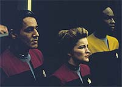
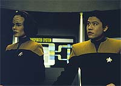
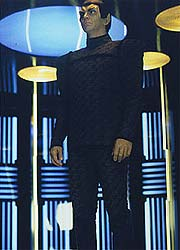

|
MANCHETE
DO EPISDIO
Melhor
episdio da temporada apela
para espcie popular do quadrante
Alfa
Episdio
anterior | Prximo
episdio
Sinopse:
Data Estelar: 48579.4.
Harry sonda a regio buscando anomalias espaciais e detecta uma
fenda espacial (o conceito conhecido pelos cientistas como
"buraco de verme"), o que faz Janeway alterar o curso da
Voyager para investigar.
Embora uma sonda tenha sido capaz de determinar que a fenda leva ao
quadrante Alfa, onde ficam os territrios da Federao, o
"buraco de verme" muito pequeno para a passagem da
Voyager.
 Quando
a sonda enviada detectada por uma nave do outro lado, a tripulao
comea a utiliz-la como um satlite e consegue comunicar-se com
uma nave Romulana. O capito Romulano desconfia da histria que
Janeway contou sobre a Voyager estar perdida no quadrante Delta, mas
eventualmente acaba descobrindo que verdade. Ele oferece ajuda
para transmitir mensagens para casa.
Mais tarde, B'Elanna descobre um modo de transportar para a nave
Romulana atravs da fenda, mas o mtodo de retorno ao quadrante
Alfa impedido por um pequeno problema: a fenda no s uma
passagem no espao como tambm no tempo. Os Romulanos encontrados
esto ainda em 2351, vinte anos antes da Voyager se perder no
quadrante Delta!
Diante da impossibilidade de voltar, Janeway decide pedir ao capito
Romulano que entregue, em 20 anos, uma mensagem para a Frota
Estelar. Entretanto, depois ficamos sabendo que o capito Romulano
morreu quatro anos antes de transmitir os dados Federao. A
Voyager no sabe se ele providenciou para que outro enviasse a
mensagem.
Comentrios:
"Eye of the Needle" a primeira grande
oportunidade da Voyager de voltar para casa. E com muito esforo
que aceitamos a idia de que eles no poderiam ter resolvido seu
problema e retornado ao quadrante Alfa neste episdio. Mesmo assim,
trata-se de uma boa histria, que apela ao carisma de uma das mais
tradicionais e prestigiadas espcies de Jornada: os
Romulanos.
 Os
produtores acertam na mosca quando escrevem que o "buraco de
verme" pode ligar no s dois pontos distantes do espao
como tambm diferentes pontos do tempo. Por incrvel que parea,
teoricamente possvel. Agora, muito mais simples seria fazer os
20 anos que separavam a atualidade de Voyager e a da nave romulana
passarem num piscar de olhos. Um pouquinho de Einstein no vai mal
a ningum.
A teoria da relatividade mostra que quanto mais rpido nos movemos,
mais devagar o tempo passa para ns --o que quer dizer que ele
passa mais depressa para os outros! Coloque a tripulao em uma
nave prxima da velocidade da luz (sem usar o truque da dobra
espacial, que convenientemente estraga o efeito relativstico) por
alguns minutos e voil! Vinte anos no futuro!
Janeway, com formao em cincia, com certeza deveria saber
disso. Ou ela matou a aula que explicou relatividade na Academia...
Uma curiosidade cronolgica que surge no episdio: segundo o que
vimos em A Nova Gerao, a Federao havia passado quase
80 anos sem contato com os Romulanos antes de 2364. Mas agora
descobrimos que o primeiro contato com eles no sculo 24 foi feito
pela Voyager em 2351!
 Para
um primeiro contato aps tantos anos, at que os Romulanos se
mostram simpticos. Podemos atribuir isso ao fato de ser uma nave
cientfica, menos afetada pelas desavenas militares entre o Imprio
Romulano e a Federao, somado ao interesse de saber o que uma
nave da Frota Estelar fazia do outro lado da singularidade.
Justamente por unir tantos elementos (de cronologia, familiaridade e
cincia) em uma chance potencial de se atingir o quadrante Alfa
que "Eye of the Needle" obtm sucesso, apesar da
ocasional tecnobaboseira e do ritmo moderado do episdio.
Citaes:
Doutor - "If theres
one thing you can count on, its that I am the last to be told
about anything that happens on this ship."
("Se h alguma coisa com o qual voc pode contar, com o
fato de que eu sou o ltimo a ser comunicado sobre qualquer coisa
que acontea nesta nave.")
Trivia:
 Este episdio estabelece que a primeira temporada de Voyager
se passa em 2371.
Este episdio estabelece que a primeira temporada de Voyager
se passa em 2371.
O ano 2351, que na cronologia de Jornada
vem 13 anos antes do incio da Nova Gerao e 19 anos
antes da srie Deep Space Nine, marcado por um
acontecimento importante: nesse ano foi concluda a construo de
uma estao espacial Cardassiana chamada Terok Nor, em rbita do
planeta Bajor. Posteriormente, conheceramos esta estao como
Deep Space Nine.
Neste episdio inicia-se a procura de um nome
para o Doutor hologrfico.
Ficha
tcnica:
Histria de Hilary J. Bader
Roteiro de Bill Dial e Jeri Taylor
Dirigido por Winrich Kolbe
Exibido em 20/02/1995
Produo: 007
Elenco:
Kate Mulgrew como
Kathryn Janeway
Robert Beltran como Chakotay
Roxann Biggs-Dawson como B'Elanna Torres
Robert Duncan McNeill como Tom Paris
Jennifer Lien como Kes
Ethan Phillips como Neelix
Robert Picardo como Doutor
Tim Russ como Tuvok
Garrett Wang como Harry Kim
Elenco convidado:
Vaughn Armstrong
como o romulano Telek
Tom Virtue como Baxter
Episdio
anterior | Prximo
episdio
|